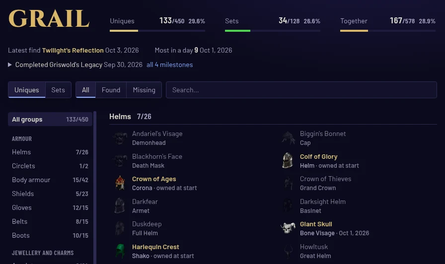

Your pace
Horazon records every Project Diablo 2 map, drop and grail find while you play and shows what your days add up to, without you typing a thing.
Windows 10/11 (64-bit) · Linux x86_64
Horazon reads the game's network traffic and never touches the game. PD2's rules forbid third-party software that interacts with the game, so use it at your own risk. Is this allowed?
Every map run, on the record
Each run is logged as you play it: the map and its tier, density, the boss kill, clear time, kills, kills per minute and how much of the map you cleared, next to what dropped in it. Filter the log by tier, map, event or character, or switch to By map to see which maps are worth running. More about Runs
Every drop, and the grail
Drops are recorded as they hit the ground, with the game's own tooltips, and confirmed when they reach your stash or character. Your item tiers rank them, so the best of a season stands on top.
The grail fills itself in: every unique and set, all time or this season, with each first find marked.

On stream, one look
Five overlays for OBS, built to read through video compression: the live run tracker, moments when something happens, the drop feed, the grail counter, and a session scoreboard for the end of the night. Set them once on the Stream page. The overlay guide


Offline and private
- No account, no cloud
- There is no Horazon server and no telemetry. Requests go only to PD2's own site, for your stash, characters and item art, and to GitHub, to check for updates.
- A folder on your PC
- Your data lives outside the app. Installing, updating or uninstalling never touches it.
- Backups on their own
- Every day and before every update. Restore any of them from the Setup page.
Run tonight's maps on the record.
Windows 10/11 (64-bit) · Linux x86_64
Free. Used at your own risk: see Is this allowed? Then install and set up in a few minutes.
Horazon exists because Project Diablo 2 does. PD2 is free, and its seasons and servers are the work of its team and community, so if you want to give something back, support Project Diablo 2 first. After that, bug reports help Horazon most, and there is a Ko-fi if you would like to.